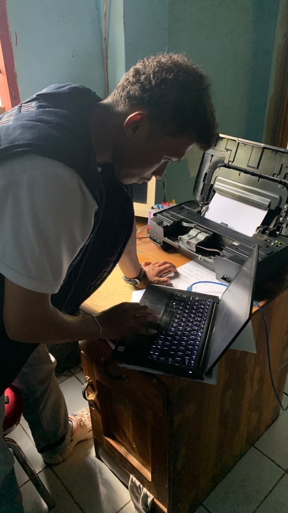
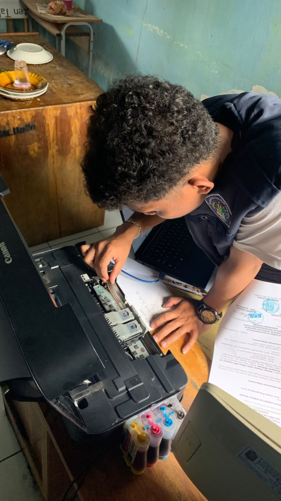
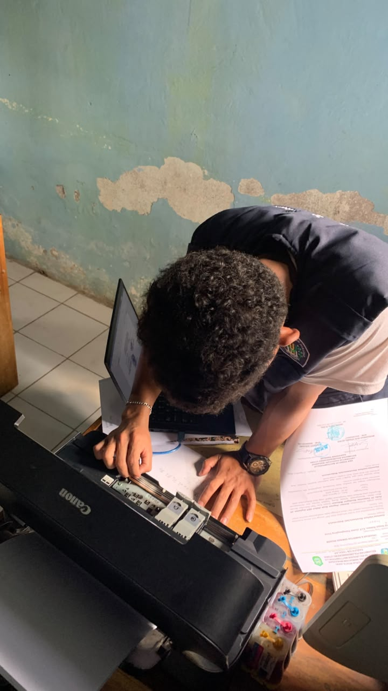

Kegiatan troubleshooting dan perbaikan printer oleh anggota KKN
Sebagai bentuk pengabdian kepada masyarakat dan dukungan terhadap kelancaran administrasi di Kelurahan Mattompodalle, mahasiswa Kuliah Kerja Nyata (KKN) Angkatan 26 Posko 4 Universitas Handayani Makassar melaksanakan kegiatan troubleshooting dan perbaikan printer pada fasilitas setempat.
Penerapan Ilmu IT di Masyarakat
Sebagai mahasiswa dengan latar belakang teknologi informasi, tim KKN Posko 4 memanfaatkan kemampuan teknis mereka untuk membantu mengatasi kendala perangkat keras (hardware) yang sering terjadi dalam operasional sehari-hari. Kegiatan ini meliputi pengecekan sistem, perbaikan masalah pencetakan (printing error), pengisian ulang tinta, serta perawatan berkala.
"Kegiatan ini merupakan salah satu bentuk nyata penerapan ilmu yang kami dapatkan di bangku kuliah untuk membantu menyelesaikan masalah di lingkungan masyarakat. Kami berharap perbaikan ini dapat membantu kelancaran tugas administrasi yang ada." — Tim KKN Posko 4
Melalui bantuan teknis ini, diharapkan aktivitas administrasi dan pelayanan masyarakat di Kelurahan Mattompodalle dapat berjalan lebih efektif dan efisien tanpa terkendala masalah teknis pada perangkat pencetakan dokumen.
Dokumentasi Kegiatan


